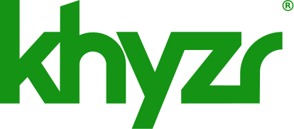

Brand · Appendix
Legal
The registered mark and the lines that go with it. A record of what is written down, not legal advice.
The registered mark.

The mark is registered. Day to day, the files carry no ®. A second set carries it, for the moments that call for it.
- Use the ® set where the use is prominent, formal, or legal: a contract, packaging, a first prominent use.
- A footer may carry it. A navigation bar never does.
- A ® file is used large enough that the ® itself reads. The sizes are with the logo files.
- The ® is part of the artwork. Never type one beside a mark, and never put one in a file's name.
- The product marks have no ® set.
Trademark and copyright lines.
One rule is set: the tagline signs khyzr's copyright line.
- "Strive Forward. Thrive Together.", in its own casing.
- The name in the line is lowercase, as everywhere: khyzr, khyzr.ai, khyzr.studio.
- The company's legal name and a trademark line are not set here. Where a contract, a filing, or a footer needs either, ask before writing it.
What khyzr made.
These were designed for khyzr and are the brand's own.
- The wordmark, the symbol, the two lockups, and the badge.
- The product wordmarks and icons for khyzr.ai and khyzr.studio.
- The logo pattern.
- The palette, the type system, the templates, and these guidelines.
Other companies' marks.
A client's or a partner's mark belongs to that company.
- It is shown for credit only, and only where the relationship is in writing.
- It is approved before it appears anywhere public. See who to ask.
- It is never recolored, and never joined to khyzr's mark. The rules are on the Logos page.
Images made by AI.
Generated images are for mockup scenes and textures only.
- Never people.
- Never anything passed off as a documentary photograph.